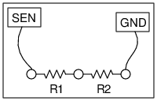

<h2 id="schematic">Schematic</h2>
<hr>
<p></p>
<h2 id="instructions">Instructions</h2>
<hr>
<ul>
<li>Connect the resistors one by one from SEN to Ground( any black terminal)</li>
<li>The value will be displayed in the "Measurements &amp; Control Section"</li>
<li>Do the same using more than one resistors in series</li>
</ul>